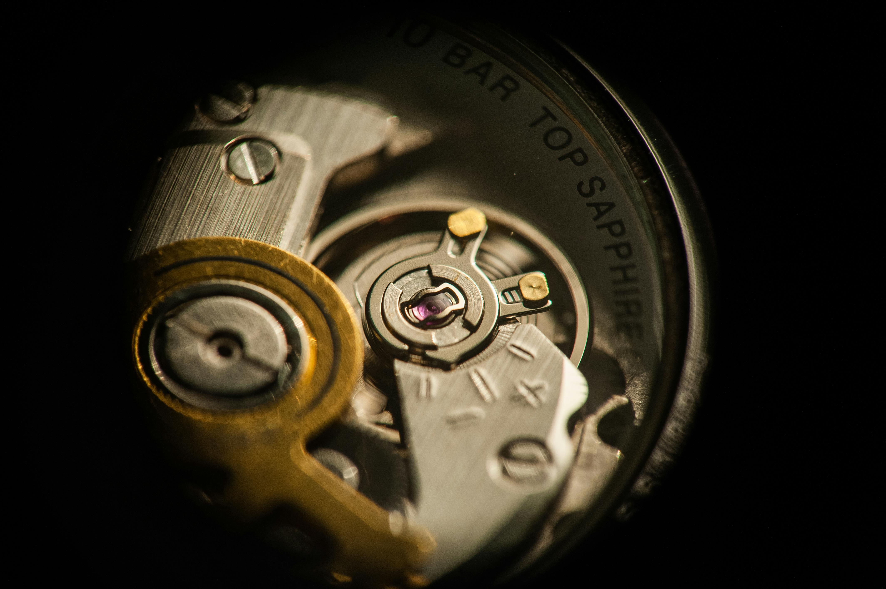

Enquiries
Enquiries are handled by appointment only. The workshop operates on an inspection-first workflow to ensure compliance with conservative restoration ethics. No quotation is provided prior to inspection.
Please use the contact form below to outline the requirements for the timepiece. The inclusion of clear photographs of the dial, case back, and movement helps establish preliminary context before scheduling an in-person assessment.
Contact form
This form captures your details. Submission handling will be enabled once a form service is connected.

Contact details
Telephone: +357 96 204 908
Workshop:
2 25th March
Tsada
Paphos 8540
Republic of Cyprus